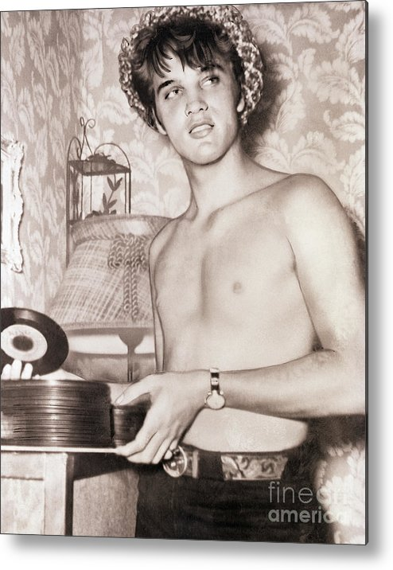
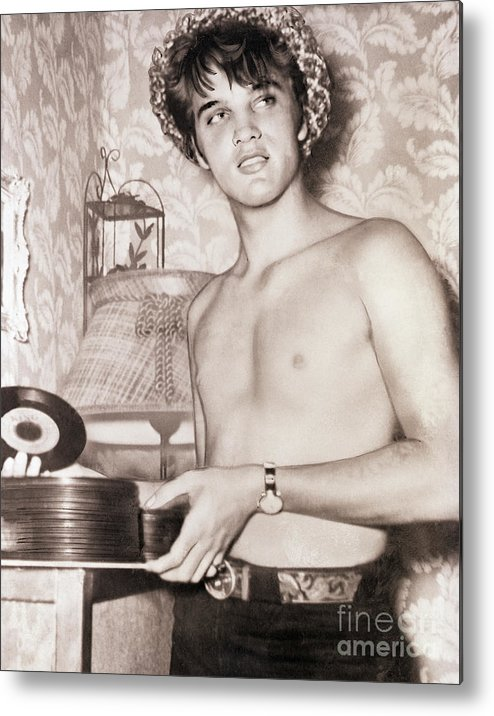
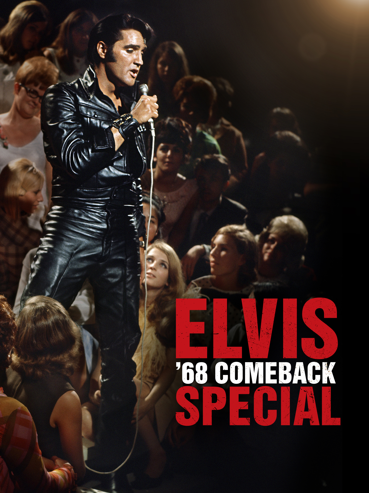
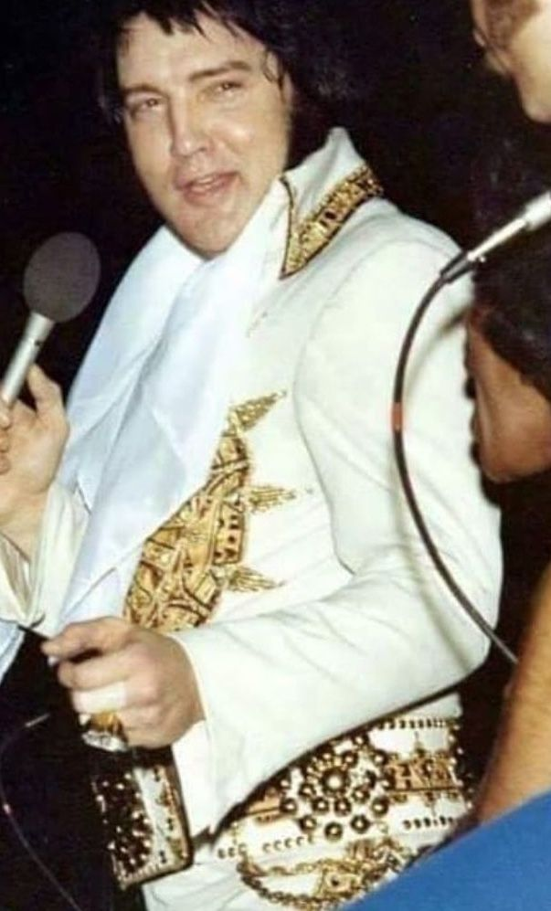
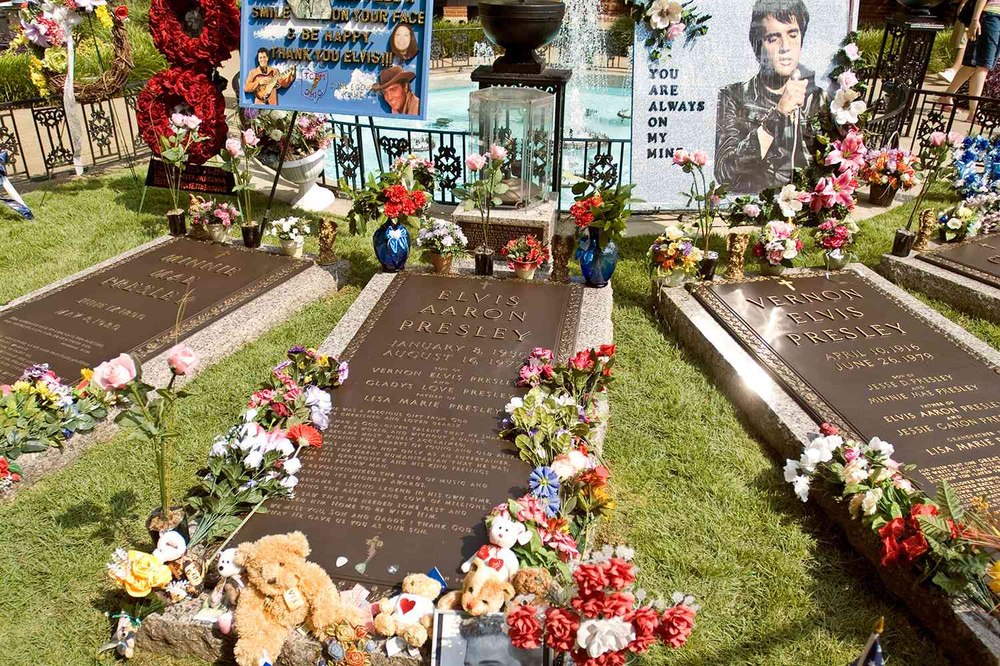
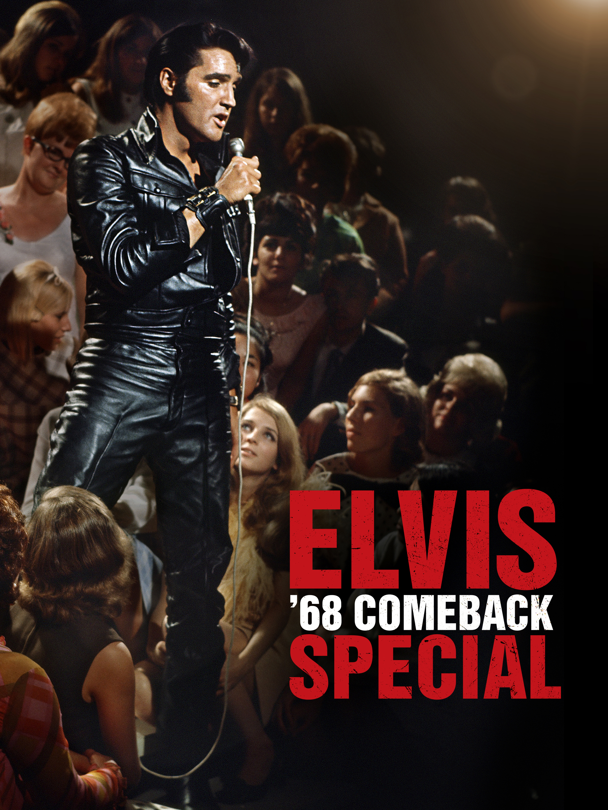
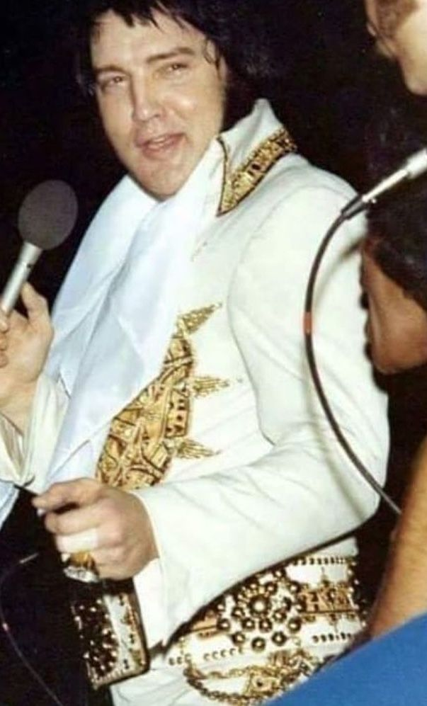
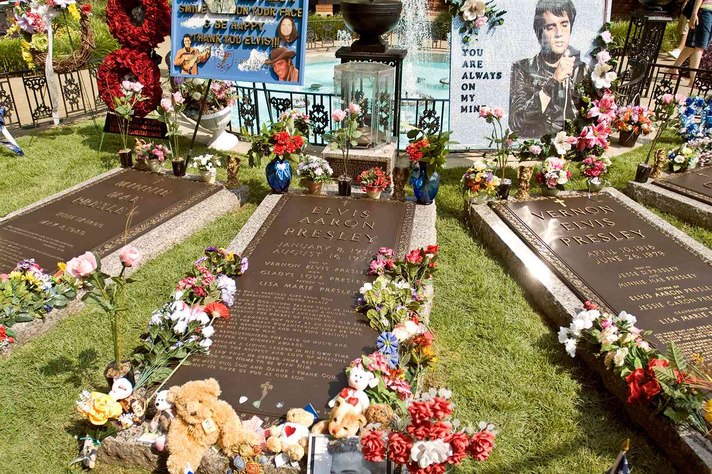

Elvis..... An Iconic Journey
Elvis Presley, born on January 8, 1935, in a small two-room house in Tupelo, Mississippi, became a global cultural icon. His story is a fascinating journey that traces the roots of rock 'n' roll, reshaping music, and leaving an enduring legacy.
The Early Years
Elvis Aaron Presley spent his formative years in Tupelo, Mississippi, in a modest home with his parents, Gladys and Vernon Presley. In 1946, at the age of 11, Elvis faced a significant decision for Christmas. He was torn between asking for a bicycle or a guitar. Despite the allure of the bicycle, he opted for the guitar, a choice that would alter the course of his life and set him on the path to musical stardom.
His love for music continued to grow, fueled by his exposure to gospel music in church and the vibrant sounds of rhythm and blues echoing through the streets. Elvis' passion for music intensified when he began to perform at local events and talent shows, showcasing his raw talent and magnetic stage presence.
One of the pivotal moments in his early career came when he participated in a high school talent show at Humes High School in Memphis. Elvis, with his guitar in hand, delivered an electrifying performance that left the audience in awe. His captivating presence and the fusion of various musical styles resonated deeply, earning him a wave of popularity among his peers.
Word of his talent spread quickly, and Elvis began to gain a local following, performing at various venues in and around Memphis. His unique blend of country, gospel, and rhythm and blues captivated audiences, setting the stage for his eventual rise to fame.
Recording "That's All Right" and Early Success
In 1954, at just 19 years old, Elvis walked into Sun Records studio in Memphis to record a song for his mother. He launched into an impromptu performance of "That's All Right," infusing it with his unique blend of country and rhythm and blues. Sam Phillips, the owner of Sun Records, was struck by Elvis's raw talent and immediately recognized the potential in this groundbreaking sound. The single was released, and its infectious energy quickly gained local attention, marking the birth of a new musical phenomenon.
Elvis's career gained momentum as he recorded more hits like "Blue Moon of Kentucky" and "Good Rockin' Tonight." His performances on radio shows and local venues propelled his popularity, drawing larger audiences eager to witness his electrifying stage presence and innovative musical style.
Television, National Fame, and Hollywood
By 1956, Elvis had become a national sensation. His appearances on television, notably his controversially sensational performances on shows like "The Ed Sullivan Show," catapulted him to stardom. His energetic performances, coupled with his charming charisma and the infamous swiveling hips, caused a sensation among audiences and drew both fervent fans and critics.
Capitalizing on his rising fame, Elvis ventured into Hollywood, starring in a string of films such as "Love Me Tender" and "Jailhouse Rock." His transition to the silver screen solidified his status not only as a music icon but also as a bankable Hollywood star.
The Comeback of 1968
After years focused on film and a decline in musical innovation, Elvis staged a monumental comeback in 1968. In what became known as the "Elvis '68 Comeback Special," he returned to his musical roots in an electrifying televised performance. This intimate, energetic show reminded the world of his unparalleled talent and re-established him as a force in the music industry.
The special marked a turning point in Elvis's career, reigniting his passion for live performances and setting the stage for his legendary Las Vegas residencies. It showcased his versatility as an artist, blending rock 'n' roll with ballads and gospel, cementing his status as a multifaceted entertainer.
The Later Years and Personal Challenges
Following the success of the '68 Comeback Special, Elvis experienced a resurgence in his music career. He embarked on a series of highly acclaimed concerts, including his famous Las Vegas performances, where he showcased his musical versatility and continued to captivate audiences. However, amid his professional triumphs, Elvis faced personal challenges.
In 1973, Elvis divorced Priscilla Presley after a tumultuous marriage. Their separation marked a difficult period for Elvis, impacting him both emotionally and physically. His health began to decline due to the pressures of fame, demanding schedules, and the use of prescription drugs.
Health Decline and Passing
Elvis' declining health became a growing concern among fans and associates. Despite this, he continued to perform, albeit with diminishing energy and health issues. On August 16, 1977, Elvis Presley tragically passed away at his Graceland mansion in Memphis, Tennessee, at the age of 42.
His death was attributed to cardiac arrhythmia, likely exacerbated by prescription drug abuse. The news of his sudden passing sent shockwaves across the world, leaving millions of fans mourning the loss of the beloved King of Rock 'n' Roll.
Elvis' legacy endures long after his passing. His impact on music, culture, and entertainment remains unparalleled. He holds records for the most top 40 hits, the most gold and platinum albums, and his influence on future generations of musicians is immeasurable.
Despite the controversies and personal struggles that marked his later years, Elvis Presley's contributions to music and his iconic status as the King of Rock 'n' Roll continue to transcend generations, solidifying his place as a cultural legend. His influence remains a testament to his extraordinary talent and lasting impact on the world of entertainment.
 

 




